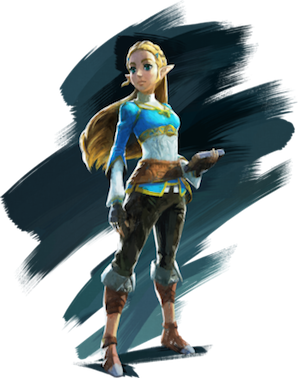
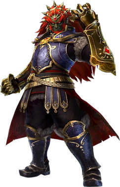

Link (pronounced /ˈlɪŋk/ lingk) is one of the most recognized video game characters
of all
time.
He is also the most reincarnated video game character of all time,
appearing as many separate people ranging from a child of 9 to a young adult of 17.
All versions of Link are recognizable by his famous green tunic and Phrygian cap.
He lives in the kingdom of Hyrule, a relatively peaceful land whose ruler is,
apart from the king, Princess Zelda. Link's job is usually to save the princess...
Characters

Zelda Princess - Hyrule Royal
Princess Zelda (pronounced /ˈzɛldə/ ZEL-də) is the eponymous name
commonly
given to the females born into the Royal Family of Hyrule in The Legend
of Zelda series. With the exception of Link's Awakening, Majora's Mask,
and Tri Force Heroes, an incarnation of Zelda or one of her alter egos
has always been one of the central characters in the series.
Characters

Ganondorf Dragmire - The Demonic Antagonist
Ganon (pronounced /ˈɡænən/ GAN-ən),also known as Ganondorf
(pronounced /ˈɡænənˌdɔːɹf/ GAN-ən-DORF), is the main antagonist
of The Legend of Zelda series. He has been present since the first game,
The Legend of Zelda, and has been present or referred to in most.
CSS Tooltips:
A
tooltip is often used to specify extra information
about something when the user moves the mouse pointer over an element.
I used it on <figure> tag and trigger it with :hover
CSS Overlay:
Overlay
CSS is used to apply text on top of an image or video.
I used it on top of my video background.